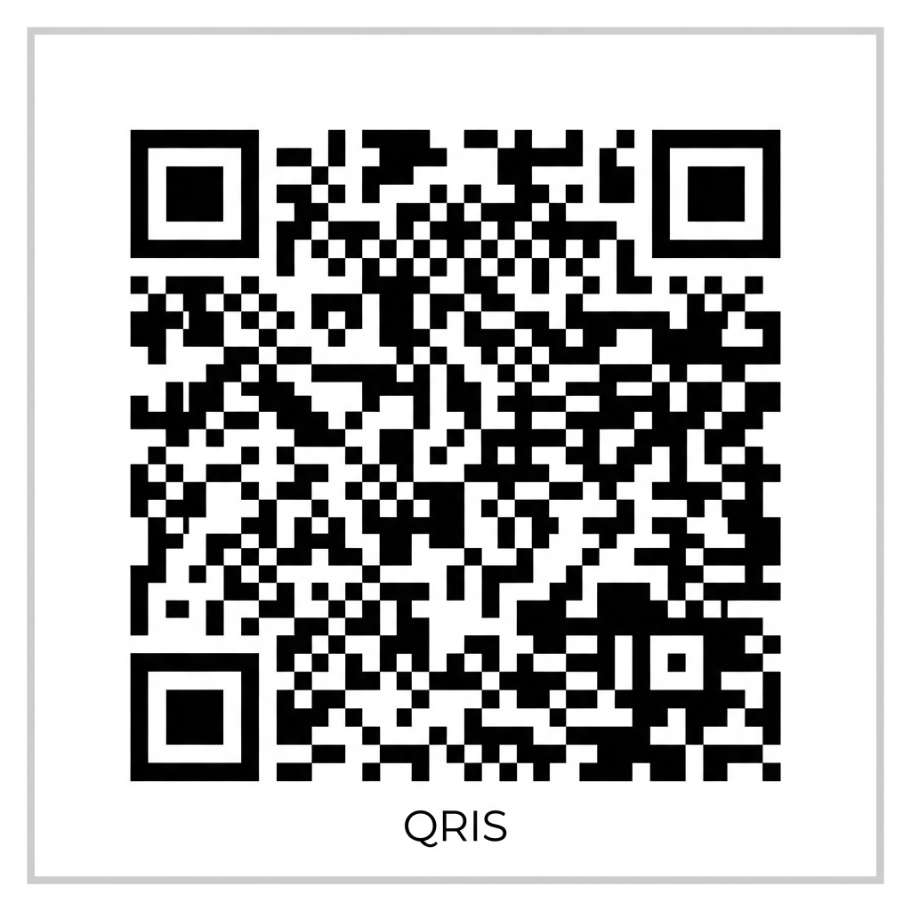

Ruang Biru adalah wadah aman untuk bercerita secara anonim. Hubungi Birru via panggilan suara, video call, atau bertemu langsung — didengar sepenuhnya tanpa dihakimi.
Booking SesiBiru itu ada di tempat-tempat yang luas — di langit dan di lautan. Di sana, tidak ada yang menghakimi. Tidak ada yang terburu-buru. Hanya ruang yang cukup untuk kamu bernapas dan bercerita.
Kami berkomitmen menciptakan ruang yang aman, tenang, dan sepenuhnya berpihak padamu.
Kamu tidak perlu mendaftarkan akun atau memberikan identitas asli. Gunakan nama samaran dan berceritalah dengan bebas tanpa khawatir.
Birru hadir murni sebagai pendengar emosional. Tidak ada penilaian, tidak ada ceramah, dan tidak ada diagnosis psikologis.
Pilih format obrolan yang paling membuatmu merasa aman: panggilan suara (voice), panggilan video (video), atau tatap muka langsung (offline).
Ruang Biru adalah wadah aman yang diciptakan agar setiap orang memiliki tempat untuk menepi dan bercerita secara bebas tanpa dihakimi. Layaknya ruang kosong yang lapang, tempat ini ada untukmu yang sedang lelah.
Birru adalah manusia pendamping di balik ruang ini. Birru bukanlah psikolog, dokter, atau terapis berlisensi, melainkan seorang individu (teman pendengar) yang mendedikasikan waktu dan kehadirannya secara tulus untuk menemani dan mendengarkan ceritamu sebagai sesama manusia.
Ruang Biru bukan layanan konseling, psikologi, atau psikiatri profesional. Birru bukan tenaga kesehatan berlisensi. Layanan ini adalah pendampingan emosional berbasis kemanusiaan.
Tidak semua orang siap bertatap muka dari awal — dan itu wajar. Mulai dari suara saja pun cukup. Yang penting, kamu mulai.
Lewat telepon suara biasa atau WhatsApp audio. Cocok untukmu yang ingin bercerita dengan rileks tanpa perlu bersiap tampil di layar.
Reguler (Siang/Sore): Gratis
Malam (21.00 - 24.00): Rp 35.000 / sesi
Menggunakan Google Meet atau platform video pilihanmu. Membantu menciptakan suasana kehadiran yang lebih nyata meskipun terpisah jarak.
Reguler (Siang/Sore): Gratis
Malam (21.00 - 24.00): Rp 35.000 / sesi
Bertemu santai di kafe, taman kota, atau ruang publik terbuka lainnya. Saat ini melayani wilayah Jabodetabek.
Tarif Sesi: Rp 100.000 / sesi
Transportasi & konsumsi kafe ditanggung pengundang.
Isi form pendaftaran singkat di bawah. Kamu bebas menentukan format obrolan dan menggunakan nama samaran.
Birru akan menghubungimu dalam 1x24 jam untuk menyepakati waktu dan detail sesi.
Maksimal 2 jam, sesuai kenyamanan dan kebutuhanmu. Tidak ada agenda, tidak ada penilaian.
Setelah sesi, beberapa orang berkenan membagikan perasaannya — secara anonim.
Aku nggak nyangka cuma butuh didengar aja bisa bikin lega seperti ini.
— Anonim
Untuk pertama kalinya aku merasa nggak perlu menjelaskan kenapa aku sedih.
— Anonim
Kami memahami bahwa bercerita kepada orang baru membutuhkan keberanian besar. Berikut adalah beberapa hal penting mengenai keamanan dan kenyamanan sesimu.
Tentu saja. Privasi dan keamananmu adalah prioritas mutlak kami. Kamu sepenuhnya bebas menggunakan nama samaran (anonim). Segala hal yang kamu bagi selama sesi dijaga kerahasiaannya secara penuh dan tidak akan pernah direkam, dicatat, atau disebarluaskan kepada siapa pun.
Sama sekali tidak. Kami ingin kamu merasa senyaman mungkin. Jika kamu memilih format Video Call tapi merasa lebih tenang dengan kamera mati (hanya suara), kamu bebas mematikan kameramu kapan saja. Kamu memegang kendali penuh atas sesi ini.
Untuk menjaga kenyamanan dan keamanan bersama, sesi tatap muka langsung hanya akan dilakukan di tempat publik yang ramai dan terbuka, seperti kafe, perpustakaan umum, atau taman kota di Jabodetabek yang disepakati bersama. Birru tidak akan pernah meminta untuk bertemu di ruang privat.
Tidak akan. Birru hadir murni sebagai pendengar emosional berbasis kemainan, bukan psikolog atau hakim. Birru tidak akan memberikan diagnosis medis, menilai pilihan hidupmu, atau menceramahimu. Semua obrolan terhenti saat sesi berakhir.
Silakan isi formulir pendaftaran melalui tautan di bawah. Birru akan menghubungimu dalam waktu 1x24 jam setelah formulir terkirim.
*Untuk sesi reguler yang gratis, kamu tetap dipersilakan melakukan donasi sukarela (QRIS/Saweria di bawah) jika merasa sesi tersebut bermanfaat.
Tidak ada tagihan setelah sesi ini. Tapi kalau kamu mau, kamu bisa ‘traktir Birru kopi’ — supaya Ruang Biru tetap bisa buka untuk yang lain.
Scan QRIS
